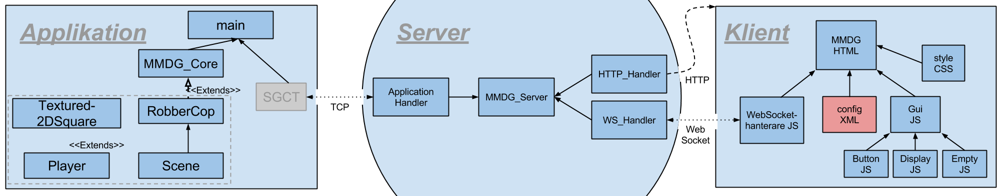

As a under-graduate examination project, me and six colleagues created a system which allows developers to connect their program to a server so that users of the program can connect and interact with their phone.
Visualization Center C was our customer. Our assignment was to make it possible for audiences at a so called dome theater, to connect to an application with their phone´s web-browser.
A developer can customize the GUI that displays on the users phone with a XML configuration file. Users connect with a websocket connection. Then a TCP connection is created between the developers application and the Massive Multiplayer Dome Game-server. A core class written by us in C++ can be used if in the dome-theatre. Lastly the user can send messages to the application by pressing developer-defined buttons on his or her phone